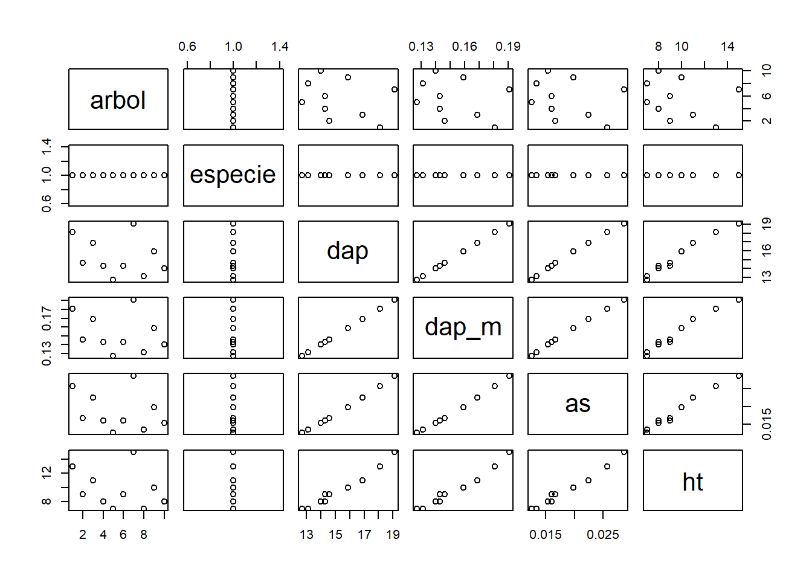
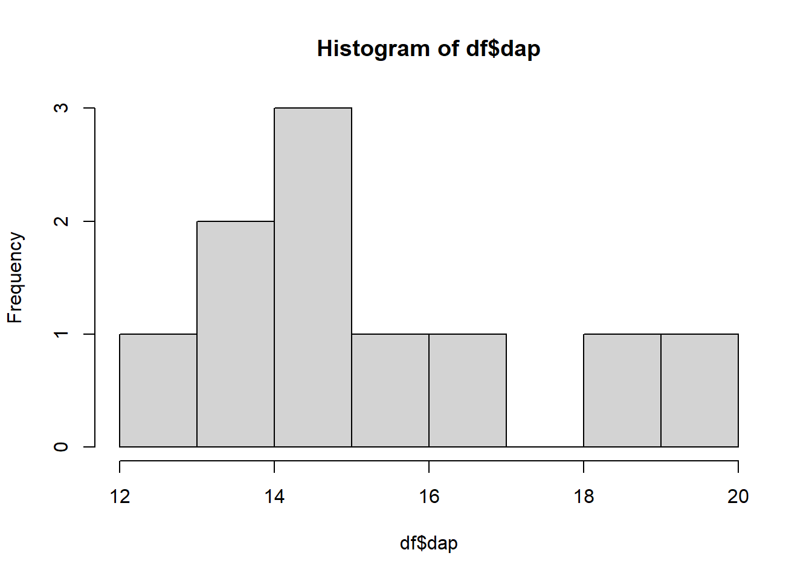
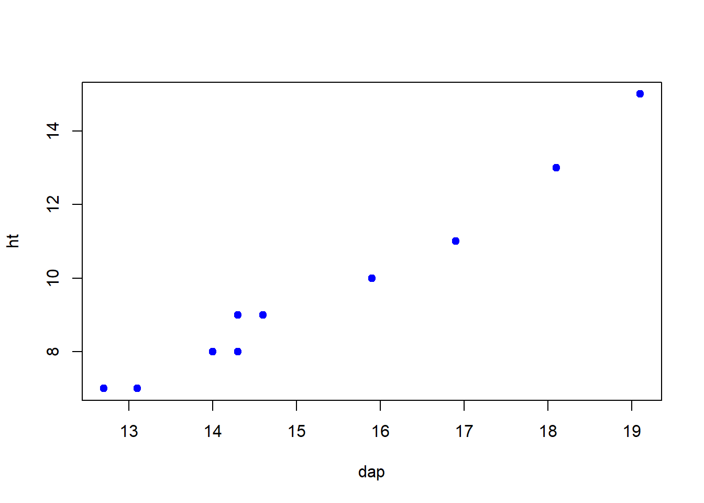

R aplicado a Medición Forestal
R Básico: Creación y Manipulación de objetos
Creación y Manipulación de objetos en R
Data Frames
Una data frame es una estructura de datos que permite almacenar datos de diferentes tipos. En un nivel intuitivo, una data frame o marco de datos es como una matriz, con una estructura bidimensional de filas y columnas, con la diferencia que no todas las columnas están condicionadas a tener el mismo tipo de dato.

En R una data frame se crea con la función data.frame(), los argumentos de esta función lo conforman las columnas que constituirán el marco de datos.
Creación de una data frame
Para crear una data frame de forma sencilla en R partiremos por la creación de vectores de la misma longitud.
En seguida creamos nuestro marco de datos utilizando la función data.frame() cuyos argumentos son los tres vectores creados en el paso anterior y le asignamos el nombre df.
#Construyendo mi data frame o cuadro de datos
df <- data.frame(arbol, especie, dap)
df arbol especie dap
1 1 pino 18.1
2 2 pino 14.6
3 3 pino 16.9
4 4 pino 14.3
5 5 pino 12.7
6 6 pino 14.3
7 7 pino 19.1
8 8 pino 13.1
9 9 pino 15.9
10 10 pino 14.0En nuestro ejemplo, creamos df con datos de mediciones del dap de 10 árboles.
Cuando trabajos con mediciones forestales es usual calcular nuevas variables de tal manera que necesitamos ampliar nuestra data frame adicionando nuevas columnas, para ello utilizamos la siguiente estrategia.
#Adicionando una nueva columna llamada 'dap_m' en la cual almacenamos el valor del 'dap' en m, dividiendo 'dap' en cm entre 100
df$dap_m <- df$dap/100 #df$dap_m crea la nueva columna 'dap_m' en df.
df arbol especie dap dap_m
1 1 pino 18.1 0.181
2 2 pino 14.6 0.146
3 3 pino 16.9 0.169
4 4 pino 14.3 0.143
5 5 pino 12.7 0.127
6 6 pino 14.3 0.143
7 7 pino 19.1 0.191
8 8 pino 13.1 0.131
9 9 pino 15.9 0.159
10 10 pino 14.0 0.140#Adicionamos una nueva columna para Calcular el área seccional de los árboles (m2)
df$as <- (pi/4)*df$dap_m^2
df arbol especie dap dap_m as
1 1 pino 18.1 0.181 0.02573043
2 2 pino 14.6 0.146 0.01674155
3 3 pino 16.9 0.169 0.02243176
4 4 pino 14.3 0.143 0.01606061
5 5 pino 12.7 0.127 0.01266769
6 6 pino 14.3 0.143 0.01606061
7 7 pino 19.1 0.191 0.02865211
8 8 pino 13.1 0.131 0.01347822
9 9 pino 15.9 0.159 0.01985565
10 10 pino 14.0 0.140 0.01539380# También es posible adicionar un nuevo vector con el valor de la altura de los árboles
df$ht <- c(13, 9, 11, 8, 7, 9, 15, 7, 10, 8)
df arbol especie dap dap_m as ht
1 1 pino 18.1 0.181 0.02573043 13
2 2 pino 14.6 0.146 0.01674155 9
3 3 pino 16.9 0.169 0.02243176 11
4 4 pino 14.3 0.143 0.01606061 8
5 5 pino 12.7 0.127 0.01266769 7
6 6 pino 14.3 0.143 0.01606061 9
7 7 pino 19.1 0.191 0.02865211 15
8 8 pino 13.1 0.131 0.01347822 7
9 9 pino 15.9 0.159 0.01985565 10
10 10 pino 14.0 0.140 0.01539380 8Exploración de la data frames
En análisis de datos es común trabajar con bases de datos de gran tamaño. Una de las primeras tareas como analista de datos será conocer las variables con las que se va trabajar y comprender la estructura y conocer las características de los datos
#Consultar el nombre de las variables que componen mi data frame
names(df)[1] "arbol" "especie" "dap" "dap_m" "as" "ht" #Consultar la estructura de los datos
str(df)'data.frame': 10 obs. of 6 variables:
$ arbol : int 1 2 3 4 5 6 7 8 9 10
$ especie: chr "pino" "pino" "pino" "pino" ...
$ dap : num 18.1 14.6 16.9 14.3 12.7 14.3 19.1 13.1 15.9 14
$ dap_m : num 0.181 0.146 0.169 0.143 0.127 0.143 0.191 0.131 0.159 0.14
$ as : num 0.0257 0.0167 0.0224 0.0161 0.0127 ...
$ ht : num 13 9 11 8 7 9 15 7 10 8#Consultar las estadísticas descriptivas de los datos
summary(df) arbol especie dap dap_m
Min. : 1.00 Length:10 Min. :12.70 Min. :0.1270
1st Qu.: 3.25 Class :character 1st Qu.:14.07 1st Qu.:0.1407
Median : 5.50 Mode :character Median :14.45 Median :0.1445
Mean : 5.50 Mean :15.30 Mean :0.1530
3rd Qu.: 7.75 3rd Qu.:16.65 3rd Qu.:0.1665
Max. :10.00 Max. :19.10 Max. :0.1910
as ht
Min. :0.01267 Min. : 7.00
1st Qu.:0.01556 1st Qu.: 8.00
Median :0.01640 Median : 9.00
Mean :0.01871 Mean : 9.70
3rd Qu.:0.02179 3rd Qu.:10.75
Max. :0.02865 Max. :15.00 En la etapa de exploración también es común auxiliarse de los métodos gráficos, con la finalidad de visualizar la distribución, relación y dispersión de las observaciones que conforman el data frame.
#Visuaizar mis datos a través de un gráfico que muestra todas mis variables
plot(df)
Así mismo, se puede hacer un análisis gráfico de la distribución de una variable o de la relación de pares de variables.
#Creando un histrograma de frecuencias del 'dap' para vizualizar la distribución de las observaciones.
hist(df$dap)
#Gráfico que permite vizualizar la relación entre dos variables de mi data frame, en este caso dap vs. altura
plot(ht ~ dap, df, pch = 19, col = 'blue')
#El argumento 'pch' define el tipo de punto y 'col' define el color.Para explorar parte de nuestros datos cuando se cuenta con bases de datos extensas, a menudo es útil mostrar sólo una pequeña parte de todo el conjunto de datos.
#Visualizar parte de mis datos.
head(df) #Muestra las primeras 6 observaciones arbol especie dap dap_m as ht
1 1 pino 18.1 0.181 0.02573043 13
2 2 pino 14.6 0.146 0.01674155 9
3 3 pino 16.9 0.169 0.02243176 11
4 4 pino 14.3 0.143 0.01606061 8
5 5 pino 12.7 0.127 0.01266769 7
6 6 pino 14.3 0.143 0.01606061 9tail(df) #Muestra las últimas 6 observaciones arbol especie dap dap_m as ht
5 5 pino 12.7 0.127 0.01266769 7
6 6 pino 14.3 0.143 0.01606061 9
7 7 pino 19.1 0.191 0.02865211 15
8 8 pino 13.1 0.131 0.01347822 7
9 9 pino 15.9 0.159 0.01985565 10
10 10 pino 14.0 0.140 0.01539380 8Manipulación de data frames
Acceso por medio de los índices
Al igual que en vectores y matrices, se puede acceder a uno o un grupo de elementos de una data frame a través de sus respectivos índices, recordando que una data frame es una estructura de datos bidimensional.
#Acceso a las variables o columnas de una data frame
df$especie #Accede a la columna de 'df' llamada especie [1] "pino" "pino" "pino" "pino" "pino" "pino" "pino" "pino" "pino" "pino"df[2] #Accede a la columna 2 de 'df' especie
1 pino
2 pino
3 pino
4 pino
5 pino
6 pino
7 pino
8 pino
9 pino
10 pinodf['especie'] #Accede a la columna de 'df' llamada especie especie
1 pino
2 pino
3 pino
4 pino
5 pino
6 pino
7 pino
8 pino
9 pino
10 pino#Acceso a más de una columna.
df[2:4] #Accedo a las columas de 2 a 4 en 'df' especie dap dap_m
1 pino 18.1 0.181
2 pino 14.6 0.146
3 pino 16.9 0.169
4 pino 14.3 0.143
5 pino 12.7 0.127
6 pino 14.3 0.143
7 pino 19.1 0.191
8 pino 13.1 0.131
9 pino 15.9 0.159
10 pino 14.0 0.140df[c(2,4,6)] #Accedo a las columas 2, 4 y 6 en 'df' especie dap_m ht
1 pino 0.181 13
2 pino 0.146 9
3 pino 0.169 11
4 pino 0.143 8
5 pino 0.127 7
6 pino 0.143 9
7 pino 0.191 15
8 pino 0.131 7
9 pino 0.159 10
10 pino 0.140 8#Para acceder a filas y columnas se aplica el mismo procedimiento aplicado en matrices
df[5:8, c(2,4,6)] #Accedo a las filas de la 5 a la 8 y a columas 2, 4 y 6 en 'df' especie dap_m ht
5 pino 0.127 7
6 pino 0.143 9
7 pino 0.191 15
8 pino 0.131 7Modificación de elementos de una variable
Después de acceder a una columna completa de un data frame puede existir la necesidad de acceder a un segundo nivel, es decir a uno de los elementos de esa column e incluso hacer modificaciones por elemento.
#Accediendo al elemento número 2 de la columna 'especie'
df$especie[2][1] "pino"#Replazando valores en una variable o columna
#Modificando el valor delemento número 2 de la columna 'especie'
df$especie[2] <- 'eucalipto'
df arbol especie dap dap_m as ht
1 1 pino 18.1 0.181 0.02573043 13
2 2 eucalipto 14.6 0.146 0.01674155 9
3 3 pino 16.9 0.169 0.02243176 11
4 4 pino 14.3 0.143 0.01606061 8
5 5 pino 12.7 0.127 0.01266769 7
6 6 pino 14.3 0.143 0.01606061 9
7 7 pino 19.1 0.191 0.02865211 15
8 8 pino 13.1 0.131 0.01347822 7
9 9 pino 15.9 0.159 0.01985565 10
10 10 pino 14.0 0.140 0.01539380 8